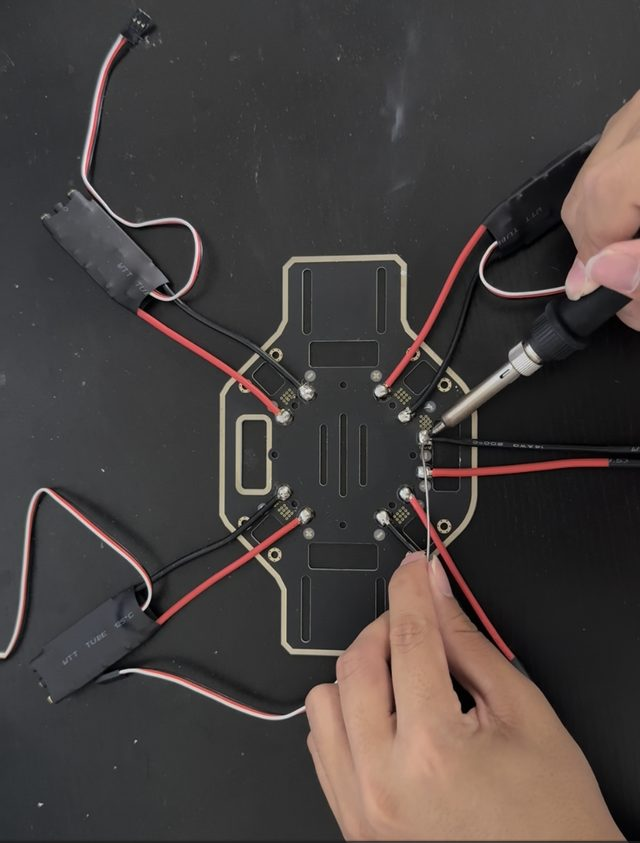

Project · P-01
Autonomous Payload Quadcopter
A self-built F450-frame quadcopter designed to carry and release a liquid payload with no operator input, splitting flight control and vision processing across two computers.
Build photos.
2 photos


Details.
- Pixhawk
- Raspberry Pi
- OpenCV
- Power electronics
- Embedded systems
- Paired a Pixhawk 6C flight controller with a Raspberry Pi companion computer so vision workloads never compete with the flight-control loop.
- Designed a MOSFET switching circuit (IRF520 driver) to actuate a water-pump payload from GPIO, isolating logic signals from pump inrush current.
- Built the power distribution around a 5V UBEC, separating the logic rail from high-current ESC loads for stability under full throttle.
- Currently integrating an M10 GPS module for waypoint navigation and an OpenCV pipeline for autonomous target tracking.
Key components
- Frame
- F450
- Flight control
- Pixhawk 6C
- Companion
- Raspberry Pi, for vision
- Payload
- Water pump on an IRF520 MOSFET driver
- Power
- 5V UBEC logic rail, separate from ESC loads
- Navigation
- M10 GPS (integrating)
- Vision
- OpenCV target tracking (integrating)